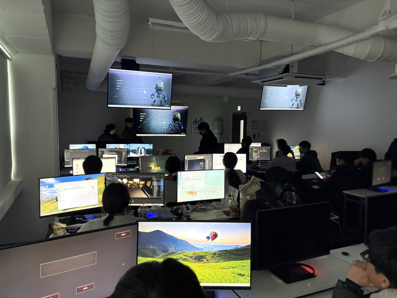

이수민 기자 · 쿠키뉴스 산업부
2025년 10월22일
이 시리즈 1편 기사를 올리고 나서 한 독자가 댓글을 달았습니다. “기자님은 안 잘릴 것 같나요?”...

막내는 어디로 갔나…인공지능이 끊어버린 ‘취업 사다리’ [AI가 삼킨 ...
.png)
23
.png)
.png)
.png)
쿠키오리지널
전체보기 ▶3000만명 시대 앞둔 K-관광…“올해 과제는 체류·소비 구조 바꾸기”
올해 한국 관광의 핵심 과제는 방한 관광객 수 확대를 넘어 관광수지와 소비 구조 개선이 될 것으로 보인다. 코로나19 이후 방한 관광은 빠르게 회복됐지만, 관광객 증가가 곧바로 국가 경제 성과로 이어지지는 않고 있다. 해외 여행에 따른 외화 유출이 더 빠르게 늘면서 관광산업의 수익성 개선이 제한되고 있기 때문이다.

은퇴자 몰리는 택시업계, ‘변종 사납금’에 일상된 과로·야근
최근 고령 운전자의 교통사고가 잇따르면서 택시 기사 고령화 문제가 함께 거론되고 있다. 60대 이상 은퇴자가 대거 유입되는 업계 특성상 신체·인지 능력이 저하된 고위험 운전자 비율이 높아질 수밖에 없다는 지적이다. 다만 현장에서는 사고 책임을 개인으로 돌리는 시각은 문제의 본질을 비껴나간다고 꼬집는다. 운전기사를 충분한 휴식 없이 장시간·야간 운전으로 내모는 택시업계의 구조적 문제가 사고 위험을 키우고 있다는 목소리다.

바둑리그 박정환, ‘반칙’ 논란…석연치 않은 원익 승리 판정
박정환 9단이 명백한 반칙을 범했음에도 어떠한 조치도 받지 않았다. ‘시간패’와 ‘반칙’ 사이에서 시간에 쫓긴 박 9단은 반칙을 택했고, 이 장면은 바둑TV 생방송을 통해 전파를 탔다. 하지만 지난 시즌과 달리 심판 개입은 없었고, 시간이 흘러 석연치 않은 원익의 승리로 챔피언결정전이 끝났다.

정부, 수출 유망 중소기업 ‘수출스타’로 키운다…5.6억·패키지 지원
정부가 우리 수출의 허리에 해당하는 ‘연간 수출 1000만달러 이상’ 스타기업 500개를 육성하는 ‘K-수출스타 500’ 사업을 활성화한다. 산업통상부는 16일 서울 서초구 대한무역투자진흥공사(코트라) 본사에서 ‘K-수출스타 500 협업기관 업무협약(MOU)’ 체결식을 진행했다. 이날 MOU에는 코트라와 한국무역보험공사, 한국산업기술진흥원(KIAT), 한국산업기술기획평가원(KEIT), 한국건설생활환경시험연구원(KCL) 등 5개 전문기관이 참여했다.

많이 본 기사
능력 있어도 기회는 없다…중도장애에 막힌 재취업 [일하고 싶을 뿐인데①]
왼쪽 팔다리가 마비됐다. 뇌졸중 후유증이었다. 지난 2020년 9월 뇌병변 경증 판정을 받은 김진희(44·경기 부천)씨는 하루아침에 중도(中途)장애인이 됐다. 사고나 질병으로 후천적으로 장애를 얻는 경우를 중도장애라고 한다. 갑작스러운 두통이 반신 마비로 이어질 줄은 꿈에도 몰랐다. 슬퍼하거나 좌절할 틈도 없었다. 당장 생존이라는 현실적인 문제가 눈앞에 놓였다.

글로벌 기술이전 중심에 선 中바이오…“시장 패권 경쟁 본격화” [신약 대전환 시대③]
희귀질환 치료제와 항암제를 축으로 한 파이프라인 재편 속에서 단일 후보물질의 성패를 넘어 플랫폼 기술을 선점한 국가와 기업이 시장 주도권을 확보하는 구조가 뚜렷해지고 있다. 이 변화의 한가운데에 중국 바이오산업이 자리하고 있다.

정치
정치일반
국회
대통령실
국방/외교
북한
경제
경제일반
금융
증권
부동산
생활경제
산업
산업일반
기업·CEO
IT·과학
중화학
자동차
유통
중기·벤처
속보
사회
사회일반
사건사고
교육
노동
환경
건강/생활
건강생활일반
정책
건강·의료
제약·바이오
복지
아동·청소년
여성
문화
연예일반
방송
가요
영화
뮤지컬·연극
스포츠
스포츠일반
해외축구
해외야구
배구
농구
올림픽
축구
야구
바둑·당구
게임
e-스포츠
멀티미디어
쿠키포토
쿠키영상
오피니언
칼럼
기자수첩
기고
전국
대구·경북
경남
경기
인천
전남
대전·충남
강원
전북
부산울산(동남권)
K-Contents
쿠키 오리지널
이슈인사이드
섹션지면보기
쿠키미디어 브랜드
쿠키겅강TV
T.LAB
쿠키메디컬
내일로 여행
.gif)
.jpg)
.jpg)
.gif)


.jpg)
.jpg)
.jpg)
.jpg)
.jpg)
.jpg)
.jpg)
.jpg)
.jpg)
.jpg)
.jpg)
.jpg)
.jpg)
.jpg)
.jpg)
.jpg)
.jpg)
.jpg)
.jpg)
.jpg)
.jpg)
.jpg)
.jpg)